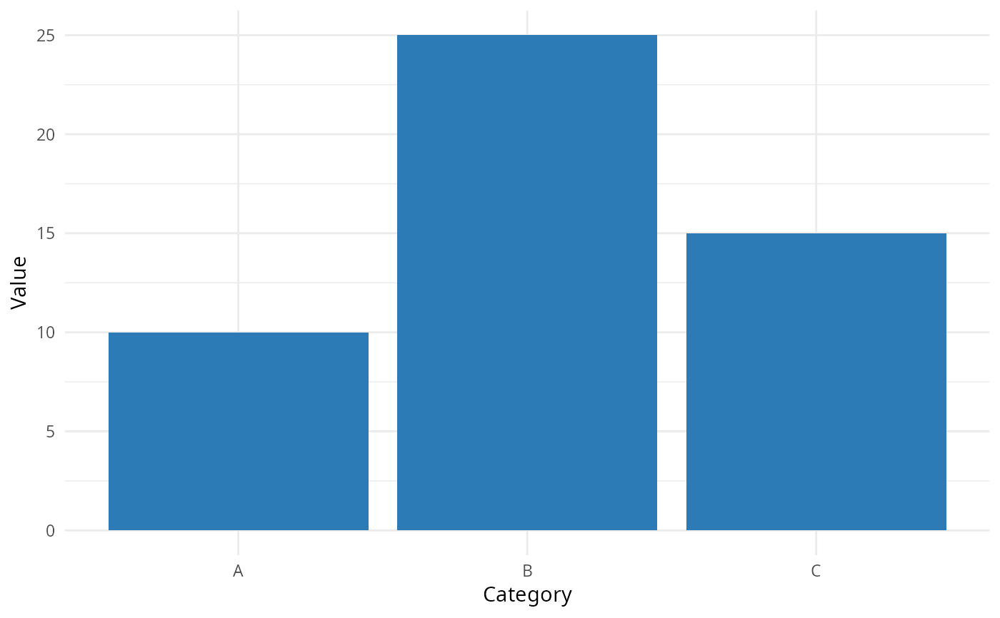
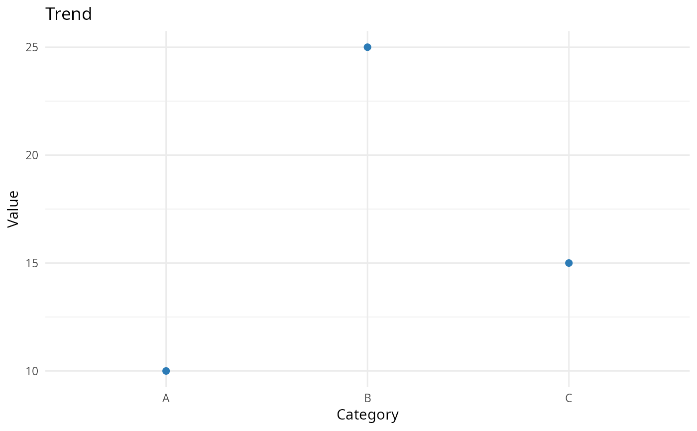
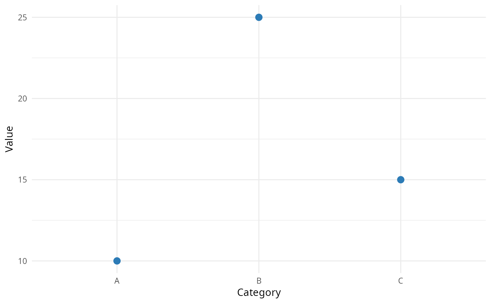

Auto-Generate a Chart from a Data Frame
auto_chart.RdCreates a styled ggplot2 chart from a data frame. Supports bar,
line, and scatter chart types. The returned object can be further
customized with standard ggplot2 functions or passed into
create_ppt_report().
Arguments
- data
A data frame with at least one row and one column.
- x
A single character string naming the x-axis column. Can be any type. Must exist in
data.- y
A single character string naming the y-axis column. Must exist in
dataand must be numeric.- chart_type
One of
"bar","line", or"scatter". Defaults to"bar".- title
An optional character string for the chart title. Defaults to
NULL.
Value
A ggplot object styled with theme_minimal().
Can be printed, further modified, or saved with ggsave().
Examples
df <- data.frame(Category = c("A", "B", "C"), Value = c(10, 25, 15))
# Bar chart (default)
auto_chart(df, x = "Category", y = "Value")

# Line chart with title
auto_chart(df, x = "Category", y = "Value",
chart_type = "line", title = "Trend")
#> `geom_line()`: Each group consists of only one observation.
#> ℹ Do you need to adjust the group aesthetic?

# Scatter plot
auto_chart(df, x = "Category", y = "Value", chart_type = "scatter")
